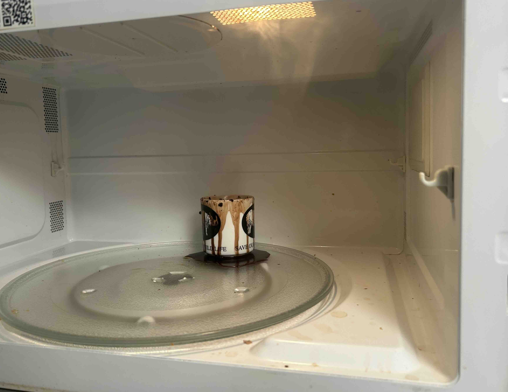
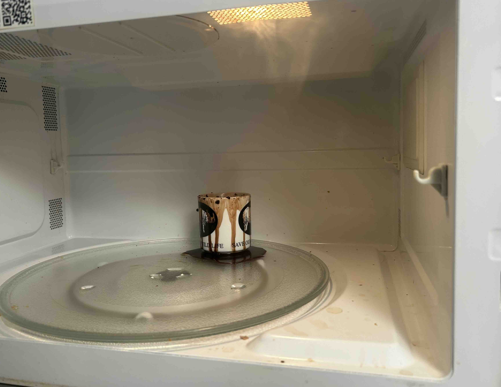
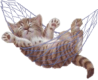

november 21, 2025
2:05 am: hi stararararar ppppeeeeeeeooooooppllllllleeee. do u like it when i call u that?
life is like so fricking weird. like what do u mean?!
maybe i should actually talk about some substance instead of spraying gobbledy goop beta to the gooners 6767676767676767.
......
....ok now that i got it out of my system i can actually communicate: i am studying alone in rowans very quiet house listening to no music but the sound of the knight (and night) cars passing by. there is an animal crossing pomodoro 60/10 youtube video playing on the tv that is keeping me company. i plan to stay up late but idk how late. i at least know that i am not going to my classes tomorrow which is a rlly exciting idea. i love that idea. no class. only study. hmmmmmm.... its gonna be so cool and im gonna get so much work done and my mum is gonna be so proud of me :3
11:40pm: nighttime is all the time! it is hard to keep up with the days when the sun isnt there to follow. my back hurts, i dont know why. maybe from all the standing and sitting and laying i have been doing.
november 19, 2025
im too tall to marry
november 7, 2025
i am shaking but it is ok. it is a good shaking, like dogs after they get wet. im shaking it all out. in an hour i am going to be free and in two i am going to be with my mum. ain't that a lovely thought.
november 3, 2025
hi star person. the grilled cheese soup dimension i was talking about a couple days ago does exist and it is frankie's house. she read my tarot and it was rlly bad. it was saying stuff like bad things are coming and i cant do anything about it and it might be my own fault. but the advice was the queen of cups card which ill put a pic of below.


anyways we live and breathe and i have been wondering what this is all about and what am i supposed to do with all this. im embarrased and sad and anxious and angry all at once and it makes my stomach turn. i wanna go back and redo it all but i guess thats what memories are. idk man anyways sometimes i think if i think hard enough i can go anywhere i want to. like in my mind but thats not real but is it real? cause everything is just a controlled hallucination (at least thats what my mum says). ok thats enough... goodbye star person.. thats you! yes im talking to you. no one else just you. i miss you! goodbye
october 30, 2025
upadte everything is still not ok. but this is not my snapchat private story in 2018 so ill keep the details to myself. i just took two extra strength advil which im not supposed to do but i did it anyway. yolo. sometimes i imagine me tripping on the sidewalk and a black hole opening up and swallowing me and then it closes like nothing ever happened. and then i get to live underground or in another dimension for a bit where school doesnt exist and someone takes care of me and feeds me grilled cheese and tomato soup and tells me that everything is going to be ok. i finished my book today. im not going to tell you which one but it turns out she was dead the whole time. and he divorced his wife. im sad it ended i was beginning to like the old bald man.
october 29, 2025
everything is bad. everything is horrible. i havent slept well in a many many moons. i have a pretty good track record of strangers talking to me right when im about to crash out, which just happened again. i look like shit today, my hair is so gross, my face is all puffy and im wearing the grossest sweater in the world. but it is ok i am going to let it all go now. phwoosh! there it goes into the wind.
october 20, 2025
i have been having some instagram nostalgia..... i miss that beautiful wonderland of content...... so i thought in honour of instagram i will do a fake instagram post right here for all my followers to see:

 

f4rrr3n he is the falling orange leaves, he is the wind that has blown them, he is the grass, dying, he is everywhere but here.
^^^ i would probably caption it something cryptic asf just cause and maybe slap some song over it. for this one i would maybe do 'sometimes' by my bloody valentine. i recently rewatched lost in translation on 123movies and it was literally 2 pixels by 2 pixels but it was enough to experience the general feeling of the movie which did include said song.
i know u didnt ask but i am going to explain the contexts of every photo: 1) when me and rowan went out and we needed to go on a walk away from the people cause she was overstimulated and in the alley after we both peed she said 'STOP! let me take a picture' 2) rowan and webster. we were in frankie's bed right after her mom fed us the biggest nutritional meal in the whole world. 3) getting ready while watching sword art online. 4) fynn and eli warming up on the wall together (wholesome) 5) my won game of solataire while amelie booked her flight to berlin. 6) exploded hot chocolate espresso mix. never trust a microwave to do a stove's job. 7) tape i liked in fynn's car (ol' faithful). 8) spilt chalk bag after a dude flew off the wall ontop of me and polina.
october 12, 2025
i am home and i am so happy. i love my mum. we talk and talk and talk and talk about everything under the sun and she makes me oatmeal in the morning and we run errands. it was snowing when i woke up today which is so very saskatchewan, it was 23 degrees and sunny yesterday. the weather is so dramatic here unlike vancouver. vancouver it is like a dull knife in the winter, here it is sharp and quick. when i got here a couple nights ago i cried and cried and cried. i am even crying right now. i miss pumpkin so much. he was the only true and good thing in this world. i have so much love for him and i dont know where to put it now. it is so overwhelming.
october 7, 2025
when i sleep i dream i am falling through the sky in my mothers arms and everything is okay. i dream of the time i was woken by love. i dream of home. when i wake now it is to an empty fridge and cold fingertips.
look here:

also here:


i am eating a very big apple that i sliced into very thin pieces. i have always liked my apples this way. the thinner the slice the better. anyways while i was cutting my apple in the kitchen a small gathering, fiesta, get together, whatever u call it was taking place around me. on a tuesday night?? it was refreshing and a weird contrast to the solace of my room. i finished my apple cutting and did a symbolical curtsy to the crowd and when i got back to my room a wave of comfort and relief washed over me. not a relief like i was escaping a bad environment. more like i have reached belonging that i cannot find in any other room. i think thats why i have certain relationship issues, my solitude is so sacred i cannot give a drop of it up. i think also the wave of comfort could be due to the fact that i recently started putting the heating on in my room or that i just burnt my fav incense. either way it was rather pleasant. i caught a new angle of myself in the mirror earlier today. i was like a deer maybe. with a halo? a halo of stars perhaps. i checked the analytics of this site and it was rather scary... i forget that this is on the internet for everyone and their moms to see and what troubles me the most is that i always forget who i tell about it. anyways it said that people in russia and sweden and all these random countries have visited. i guess star people are everywhere! like 20 people have been here in the past 24 hours like this has to be cap. im calling cap! cap! cap! cap!
september 30, 2025
i am in aperture jazz coffee bar thingy. i havent been here in a while. i need to do a lot of work on a project today. by a lot of work i mean try to finish it. but i dedicated the whole day to it so i am hopeful. i am listening to the charlie brown christmas movie soundtrack because it reminds me of my mum and its her birthday today. happy birthday mum! a guy probably in his 50s smiled at me while i walked up to grab my awesome decaf flat white. i cant help but assume the worst and i hate that. but would he have smiled at another man his age? or a woman his age? like i hate to be like 'man is being nice to me he must be a creep' but i find it really hard not to think me being a young woman has something to do with it. i love my mum so much so much so much u guys dont even understand she is the best ever i miss her so much. im going home for thanksgiving and its just gonna be her and i and im so excited.
september 28, 2025
it is raining it is raining and i am sitting here waiting for it to pass. gaia doesnt like it when i turn on all the lights but i am scared of the dark.
september 25, 2025
i refuse to be sad. i am channeling my inner boy and in beast mode 24/7. and beast mode is drain gang and climbing and wearing the same jeans 5 days in a row. me and gaia at the hive tmo im so excited #wholesome
september 23, 2025
RIP to the goat pumpkin. i love u to the moon and back one million billion trillion quadrillion times.
september 22, 2025
hai :3 at the freaking north van hive w da gang. life is like that one drone shot of hawaii.
september 21, 2025
ok star ppl lemme put u onnnnnnnnnnnnnnn........ 'DIAMOND JUBILEE - CINDY LEE'. i know what u might be thinking: 'its not on spotify or any other music streaming service??? this is so annoying!!!'. but doesnt it make it more of an inticing listen? sooooo niche soooo indie soooo underground. ur freaking welcome.
i also have mostly exited the shadow realm so maybe i will be posting and updating this site a little more....
september 18, 2025
it is 11:35pm on a school night. just got back from the hive and am eating cucumbers and carrots. i feel old. like the summer has aged me 20 years. i eat kale now. and am partially pescatarian (unless rowan feeds me meat). it is nice being old. i am trying trying to change but it is like im pushing a very large boulder up a hill and everytime it gets close to the top it rolls back down..... and also i am shirtless and a man and greek (do u get it???). ok but actually i am trying to change but what else is new!?? i be trying to do this shitttt all da time and this time is no different. maybe i am not trying to change but trying to choose happiness. so i have been climbing and spending racks in the produce section of nofrills and its honestly been doing me a solid. i also have been listening to new music (!). upon my request eli sent me like 5 albums to listen to and so i have been working my way through those. i like goodbyehouse - snuggle. i listened to the whole thing on the bus to school and it was pretty fiiire. some more content i have been consuming is 'nor gather into barns'. if ur into youtube u gotta check this guy out. he makes pretty but sad videos. idk. i have become very attached to him. i have been thinking of if i was a boy i would be just like him. but then i realize i can do that as a girl for the most part. it just frusterates me that being a woman is so vunerable and scary. i know being a man has its cons but i would rlly like to do that cool travel stuff without being so scared. i have been getting stronger from climbing. its weird. i have never ever been this strong. and im not even that strong! i used to think that being strong was not for me. like it was unattractive. but now i dont rlly care. but sometimes i do. i care a lot what people think of me actually. i wish i could just let it all go. oki gn star ppl ! p.s. im goin to mj lenderman tmo :0
august 5, 2025
hello i am back what da heck.... so strange of me to be so present in this stratisphere (?? idk how to spell). but yes i am back and perhaps its just cause i have been using my compooper more recently. ok so hi! i wonder who is out there... helloooooooo.... give me a text! or freaking email me. that would be dope. ok but seriously let me talk to u.... everyone around me has a freaking bf now and its pissing me off. like just dont do it. boys are so lame and they are all like 'lets train' and 'lets go climbing'. ok wait brb gotta take a dump. okok im back. wait what was i saying. oh yea boyfriends. ok fine i actually dont care that much about it boys are fine i guess. i find the need to not say anything seriously about myself on this blog which is entirely missing the point of a fricking blog. but im scared someone evil is going to read this and be like mwahahah now i know all her secrets. but also i am scared that im oversharing u know. like when u get a littttle too personal with someone u just met and they are like nodding along but then after u realize that they thought u were crazy the whole time. but i think this blog is nice cause star people are only star people if they come here and its not like freaking instagram where it shows it to every single person i have ever met in my life all at once. u know? ok so maybe i should share something about myself now. ummmmmm. ok well why i am thinking about being too scared to be open about my opinions and thoughts is cause i just had a convo with my bestie rowan about how i am so scared of being wrong. not only that though im so scared of judgement and i keep a little part of me sacred and only for me and sometimes that makes me feel really isolated. and when i feel isolated and misunderstood i like to just further dig myself into a hole. its not a good cycle. so now i am sharing that. i am telling that to the world. and that thing about me is from that sacred untouched part of me. there u go. eat it now. yes eat the whole thought please. all in one bite......... ok also we were talking about how confidence is key which always freaking comes up in every aspect of my life. how things can be rlly cringe if u let them be or they can be rlly cool if u put some confidence behind them. like this blog could be super cringe if i let it be in my mind, which sometimes i do. but right now no! im so awesome and this blog reflects that to the moon. ok another thing i can share is that i feel spiritually connected with crows and harbour seals. sue me! i watched frances ha the other day and it made me so happy. i love lvoe vleo lveo love that movie so much. i also think that fall and winter in vancouver feels like that movie. cause sometimes the rain and clouds can wash everything into black and white, if u dont know frances ha is in black and white. ok segway into the fact that fall is coming. thats crazy! im excited personally. lemme know ur opinion in the comments. i wore a coat today and it was awesome. im excited to wear my scarves and long skirts. ok im hungry gotta eat and then get my beauty rest. bye bye stars and people and star people.
august 1, 2025
a return to simplicity....
i am so overwhelmed by everything.. so much technology so much noise between the this and the that, between me and you. the flower i bought for myself has dried and wilted, leaving a puddle of pollen where it lay. i have been leaving the house with no phone because i cant tell if it is the phone but i carry a whole world around with me. i feel so connected and tied to the worries and problems i have with people who are far far away. last night i couldnt sleep and i turned and turned and went over every tear in the fabric and promised come morning i would mend and mend. but now it is morning and i do not think i need to mend, what is broken is gone and there comes a peace with that. the problem with leaving my phone is three fold: music, where abouts and time. the first, music, is not a huuuge problem because i have found that i have been listening to too much music and being so cut off from the present moment/environment. taking the bus and walking is way more enjoyable without music, try it sometime! music should be a privilege not a necessity. ok but i do enjoy a good song from now and then so i got an ipod shuffle!! 20 buckeroonies from my trusty pal facebook marketplace. it is purple and i ripped all my fav songs and albums from spotify onto it using one of those sketchy websites. now i can dance around like in those old apple commercials(like this one!). anyways... the next problem i have noticed is im a big time google maps girl, i loooove knowing where i am or exactly when the next bus will be. for this one there is no solution.. it can be a blessing tho, i will just have to figure it out and i will get to know my city a lil better. ok and the last problem is not one i would have expected but i do not have a watch and so when i have work the same day and am out and about i get pretty stressed about being late. i have like asked people for the time but thats always a little awkward so i think i will need a watch in the near future. ok so that is all. i am trying the phoneless lifestyle to see if it helps with being more present. i may report back on my progres if i feel the urge to but dont count on it. bye bye bye my star people if u are even out there!!!!!!!!!!!!!!!!! xxxxxx kisses to the moon
july 2, 2025
hellllloooooooooooooooooo world! there is something about the way the wind blows and i looked on the ground yesterday for a leaf and there were none. cause change comes in the growing and the dying and even the growing feels like dying sometimes. i rlly thought i was dying but mayhaps this is the shedding of the chyrsalid that must happen every so often.
june 18, 2025
its been awhile my beautiful beautiful star people……. i know i am truly sorry… last i was here was before end of finals even like whattttt. school wise i kinda balled out w my grades this term and got into computer science!!!!! yipee! now i know for sure i will spend my life staring at a screen. we also went to alaska… i love those guuys (rowan, fynn, eli, polina). it is a trip i will remember but not for the fact that it is a once in a lifetime thing. i will remember it as a piece of the pattern, a stitch in the sweater, a beat in the song. it will not be an anomoly but something i will live again and again and again. i cannot bring myself to explain it, what we did, where we went, butt maybe i will give a few moments: skinny dipping in liard hotsprings absolutely ham jam, fynn hanging off the bridge, getting so ill in whitehorse, climbing up the kathleen lake mountain and smoking at the top then sliding down, skinny dipping again in the frozen lake, dance classes with eli in the lodge, burger town, the spooky foggy drive with ghost stories, getting jimmy high in smithers, eli’s ritual in stewart, and the lillooet brewery. ok im done now. now that ive been home i got a job…..! at…….. brassneck!! whatttt! its the brewery that fynn and eli work at and conveniently fynn’s dad owns. im working as a server and it is so fun and i like beer. i am trying trying trying to take advantage of my freeness this summer to do everything i have ever wanted to do. but it is frusterating cause i am free from the shackles of school but i am not free from my bad habits. and even doing things that i want to do takes work and to play a song i must practice, and to read a book i must first read a page and to leave the house i must put on my shoes. change starts with a little push. i can make all the lists and plans i want and still they will collect dust without work. but anyways, there are freckles on my arms and i rearranged my room and i fixed my bike and i went to hot yoga with rowan and we are going again today and i wrote a song with frankie and we are having a summer solstice party in a couple days and i am healthy and i love my friends and i am grateful. so so so so much love to u all xxxxxxxxxx
april 22, 2025
rotting with couch-desk... t-minus 5 days til alaska.. 3 exams left....

april 21, 2025
have you star people seen this video???? i have discovered there are some battles i must concede because they are eating all the time (love) i have left in this life.
april 19, 2025
do you think fate exists? things happening for a reason - dont think it does personally. i think things happen and when they do they have reason.
april 15, 2025
ok so maybe i have been neglecting u guys. im sorry! i wish i could hangout here all the time but in truth i cannot. i have to do things in the real world like go to no frills and stare off into the distance while twiddling my hair. very important things!! i have failed to study my french for the past two days and so i am forced to drink a real coffee (not decaf) at 11:26pm and start the journey. i dropped an eyelash into my coffee. i have been thinking about lea seydoux and scarlett johannson and that one soko music video (iykyk). so if ur wondering what i think about when i twiddle my hair it's that!! anyways so i also have this abdonmin pain that comes and goes and is midly concerning but i prefer not to think about it.
here are some photos from the past couple days. 1) soup and sandwich rowan made for me 2) me on the way to the 5 beer challenge 3) polina swagging out at the 5 beer challenge 4) my math hw
april 13, 2025
i am feeling nauseous. like dis is bad guys. someone help. why do i always have some concerning underlying health condition.
i saw today that bernie sanders spoke at coachella on clairo's stage. i thought that was cool. the video was titled 'addressing coachella' or smth and i thought he was like cancelling coachella and i was like omg drama!! but he was just addressing the crowd BORING. also good tho. hes pretty cool.
i think im gonna b rlly sad when bernie sanders dies. and willem dafoe.
april 10, 2025
hello my star people. on the bus right now. laptop on the bus! i am excited for a break from all of this school. and by school i kinda mean like everything that comes with school. i have been feeling very socially overwhelmed. and summer is always a little calmer in that sense.
april 9, 2025
i cannot stop listening 'dancing in the club - mj lenderman version'. im just a loser and ive always been. ALSO found 6 more bagels in my freezer! i am rich!
check out these flicks anika took of me:
aw look at him dance... i wonder what he is cooking up........ what would happen if u asked him.....?

(CLICK HIM)
april 8, 2025
sickness has plagued me...... i cannot bring myself to go to the grocery store. i have two bagels left, a bag of oats and 7 eggs that i think will last me til i am healthy again. i missed the last day of class. not like i rlly went to class anyways. i got a hat yesterday before my body started rotting away.. it is a very nice hat. i like it a lot. i cancelled my plans yesterday and took 2 melatonin at 6pm then ate a bowl of oatmeal with marmalade and then drifted off to sleep. or more like violently fell asleep. i proceeded to have a series of disturbing dreams over the course of 15 hours.
april 6, 2025
i am trying to shape a hat into a cowboy hat, like curving the sides up. with some steam? i actually have not looked up if that is a real thing but maybe ill just try it. cause in oldin' times u just kinda did stuff. i used to use a recipe every time i made a smoothie when i was a child. like i pulled out the measuring cups and everything. i was so unsure that i was doing life wrong i wanted someone to tell me exactly what to do and how to feel. im still like that a little bit. but i am steaming my hat without a youtube video and thats enough.
oh my gosh, i cannot wait for summer to bask me with her sunshine and love. i know i love lists too much but here's a list of some things im gonna do this summer: - play soccer in the park with gaia - bike to the beach - carve a stamp and stamp things - give away my clothes to friends and strangers - sunbathe on rowan's balcony
april 4, 2025
hellooooooooooooo farts aka star people...... the sun is out and so i have no will to do any schoolwork. but that is how life is sometimes. i dont rlly have that much to say. my tum is queasy cause i smoked on an empty stomach.. but i think it is passing. as all things do!! good and bad. everything passes. maybe i will actually just work on my blog because there are still some things i need to add.
oh! but wait i got some of my film back a couple days ago and they kinda fucked up the alignment but here are my favs:

april 3, 2025
11:20am: i lost my airpod case on the bus and ran into a friend. she had an eyelash on her cheek and we shared the wish. 10 minutes later i found my airpod case. it turns out that she wished for me to find it and i wished for her wish to come true. it all worked out in the end! and we went on our merry way.
11:58pm: lowkeyys was just hittign this in the clurb:

or maybe a little bit of this:
april 2, 2025
hello my star people i love u. i know i say it a lot but it is kind of in the hopes that u actually internalize it. love is everywhere - i found a sewn heart at the free store and maybe i will pin it to my bag or maybe i will give it to a friend. who knows! love is free and its crazy because it is the most beautiful thing. maybe i sound like some crazy hippie but it makes me feel better about this whole thing. i have my philosophy at 9am every second day and it makes me very existential. he was talking about if there was a beginning to the universe or not and i couldn't stop thinking about how my clothes came into being and where the atoms were before this compilation. i made a pencil case out of scraps of old clothes yesterday and now i can't stop imagining where this pencil case will go when i am dead.
i think if my computer science prof listened to one of my playlists he would divorce his wife and leave the church.
ok maybe i was being dramatic.. but speaking of music i just spent the past two hours listening to one million different folk albums to try to give myself some new sounds to chew on. and i know i shouldn't be limiting myself to folk but i really just love the raw raw strumming of a guitar and i get mad when i hear production getting their grubby hands all up in the natural sound. anyways i couldn't rlly find a new mind warping album to hyperfixate on. i do rlly like MJ lenderman tho. sucks that i didnt go see him when he came through town. but maybe u stars are looking for new music so here u go:
heavy metal by cameron winter
it's a goodin. prettttyyyyy strange tho i ain't gonna lie. a good foot in the door song to this album is 'love takes miles'. but then some of the stuff further down in the album gets awesome and freaky and like wtf is bro saying!! there was a series of a couple days that the only song i could listen to on the bus was 'nina + the field of cops'. anyways give it a listen or whatever... i don't even care....
april 1, 2025
april fools! / white rabbits!
i just got sucked down a david lynch youtube rabbit hole and i must say it was grand. i am especially interested in the transcendental meditation he talks about (or talked about RIP!). meditation really is something that is so magical. anyways.. i think that magic should have a 'j' in it don't u think? the letter j is so magical, it might be the most magical letter in the alphabet. so shouldn't it deserve to be in the word magical? majical. MAJICAL. it doesn't look quite right but it FEELS right. sry i digress yes meditation hmmm yes.... veryyy interesting... so interesting that i forgot what i was going to say..
what time is it in halifax? i must know because it is zia's birthday on the 2nd and i want to wish them a very happy birthday. oh it is 1:48am in halifax well into the birthday. i will send a text.
let me show u star people my favourite gif atm:
if a picture speaks a thousand words, a gif speaks one million. so much emotion and meaning. these cats captivate me and remind me how beautiful life is when ur hanging out with ur pals on a fence type lookin thing just shootin the shit.
i have been thinking a lot about my sexuality and im just gonna leave it at that because i dont like to get too personal with u star people despite how much i love u. but it just comforts me that adrianne lenker married a man and now is dating women and is queer. i used to think that something as fundamental as attraction and sexuality is something one knows immediately in one's self but that is really not the case. many lesbians date or even marry men before coming to terms with their sexuality (im not saying i am a lesbian just that that is interesting). (i am also not saying i am not a lesbian).... (u know what i mean)....
goodnight my lovely beautiful majical star people oh stop it ur making me blush!!!!!! xxxxxxxxx
p.s. i just remembered i forgot to eat dinner.... maybe thats why i felt the need to eat 5 bowls of mini wheats...
p.p.s. OH MY GOD GUYS!!!!!!! THE BLOG EPIDEMIC HAS SPREAD!!!! 3 PEOPLE!! 3 PEOPLE I KNOW HAVE MADE BLOGS IN THE WAKE OF MEFROM5TO7'S LAUNCH!! BLOGGERS UNITE!!
march 31, 2025
oh my god everyone do the wordle rn.... (spoilers: it was BOOTY)
hi star people! i just sewed for 2 whole blissful hours and finished normal people. while surfing the web just now (as one does) i stumbled upon a tanya davis poem! she is this awesome poet from PEI, i listened to her album "clocks and hearts keep going" over the summer and it changed me life ! i even have it's title written above my keyboard on my laptop where all important phrases go so u know it is serious. just found out that she is gay! which i did not know before. i was listening to a poem on youtube and was like wow this person sounds exactly like tanya davis how weird... and it was! alexie was talking about consuming more art and i think i need to do the same. and maybe YOU star people need to consume more art.... i'll get u started: "eulogy for you and me" by tanya davis (song) "how to be alone" by tanya davis (poem)
march 30, 2025
1:23am: i need to learn my lesson and stay HOME when i am feeling tired. i cannot wait to be an old woman in bed by 8pm every night. i will knit hats for the neighborhood children and mail my friends detailed letters about my trips to the doctor and the grocery store. ok but serious question: do u think tiktok will be around for forever? like will this generation be scrolling when we are old as the hills??? ok bye i need to maybe try to sleep.
7:02pm: i had the most blissful day. alexie and i went to stanely park and collaged in the forest and ate icecream and watched the dogs and their owners gallop around and had a grand ol' time. the sun was out and my body has that lovely exhaustion that only comes from a day well spent.

at the cafe today a mother came up to me to say she loved my whole look. i am wearing a very mum outfit: cropped blue jeans with my blue and white striped smock overtop, my orange wool cardigan and clogs.
march 29, 2025
goodmorning my star people. i am having a very nice and slow morning here in farrenland. i made some french toast and wrote a poem about it and now i am eating the french toast. looking through my old journal from spring '23 to summer '24 and my writing is so different. i kinda like it. i forgot i made a list of rules for myself back then, i don't agree or connect with some of them anymore but here they are,
RULES:
(1) never wait to jump in cold water
(2) when in doubt, move ur body!
(3) if angry - eat
(4) labels restrict
(5) comparison is the thief of joy
(6) gratefulness - "you are the luckiest girl"
(7) know your limits don't know your limits
(8) human connection is necessary
(9) tell people you care about that you care
(10) art is emotion + necessary
(11) everyone is a product of their environment (no judgment)
(12) look at the full moon (but not for too long)
(13) cartwheels for happiness
(14) dance
(15) messy room = messy mind
(16) everything takes work - even love
(17) poems are not for others' ears
(18) nothing is a space to hold
are u an artist? think about that for a bit. personally i think we all are. i do agree with (10), art is emotion and necessary. i think it is hume maybe that said we are all bundles of perceptions. i think we are a bundle of emotions and we need to put them somewhere. that somewhere is art!
i have been rewatching normal people in my spare time. and i am so much like connell. how he doesn't know how to feel or what he wants ever.
march 27, 2025
hi farts. youtube video of the day: the REVOLUTION STARTS with the ARTS called my friend rowan (saskatoon rowan). i love this girl so much we have been through the depths of hell together.
march 26, 2025
word of the day: shmuck
hi star people! im seeing FROG tonight. FROG as in the band FROG, creator of count bateman and GROG. i think they are two brothers but maybe that is not tru...... we will see. this is my vision:

march 25, 2025
hai guys. its past 12 so that means its the next day!!!!!! and i can make a new blog entry!!!!!!!!!!!!! when i blog i feel like that scene in the social network where jesse eisenberg is drunk blogging about how much he hates his ex gf. but like in a good way?? idk man.
its 3:28am!!!!!! i am feeling fine. everyone left me a while ago.. but i dont mind it that way.

5:48pm: i have decided to start centering art in my life more. art heals! speaking of art i have been rlly loving this irish artist saoirse moncrieff. check her out, her videos are so beautiful but raw. a breath of fresh air from the rest of the internet. i rlly need to delete twitter. i think it is the cause of this hopelessness and anger i have been carrying. ok i deleted it.
here's a quote of her's that i hold dear (read it in an irish accent): "...but also it is me trying to be loved and thats what we are all trying to do all the time just try and make people love us and thats just the biggest trick because we're already loved and we don't need to try and it's not something that we succeed or that's conditional or that's to be gained it's just there."
the people i love the most in this world don't give a flying fuck what others think. and that is the key. because all i want is to be loved but that is the only thing i actually have. ok that's all i have to say for tonight. wish me luck on my tests tmrw my sweet stars.

p.s. i need to find a new animal to hyperfixate on im running out of cat gifs
march 24, 2025
i think i need to hermit for the next 3 days. oh lawd. this is the final stretch of midterms but i have been doing this for this whole term. here are the things i am looking forward to doing when i am through this: - play stardew valley on the bus - start writing again - bike to the beach - start meditating again - start a new book - sit and listen to my cds - plan the alaska trip - make banana bread with the one black banana in my freezer - make my chickpea stew that i have been putting off making for the past 2 weeks i have to pull another all nighter tonight and i am not looking forward to it. but maybe this is my last one of this term (?)... probably not tho.
florist is so beautiful. if u star people have time to listen to an album i highly recommend 'emily alone' by florist. i first listened to it in february of last year and it truly swept me up in a big ol' hug when i needed it the most. and i need it now and florist is again here and i am so grateful. i am reminded of the ocean and of love and of myself when i didn't know that much but i knew enough to know that love is the be all end all. i love u all star people and when i look up into the sky i see us all dancing, don't stop dancing!

eating a spoon of peanut butter. it is 10:10pm.
ok now it is 11:14pm and i am making pasta (WHATTTTTTTT). i am going to breka ASAP to see my girl alexie.
march 23, 2025
hi farts. finally got my git repo to work. i need a reset, a reclaiming of my name. maybe just a book and a cup of tea.
march 19, 2025
im using my 5 minute pomodoro break to blog but i cannot think of anything that has happened to me or anything that i have been thinking. maybe i will just say this: love your body and your friends to the max and dont forget to wear ur retainer and jump up and down ever so often and try to catch yourself when judging because that is someones child and its so simple but when i think this i see arms around all of me and i see my arms around all of you and i really mean it when i say that love is the answer and all of this other stuff is just bullshit that will never equate to the love me and u hold.

ok im back it is my 2nd pomodoro break. i am studying for my calc 3 midterm and i realized a couple days ago that this is the last math midterm i will need to take in uni!! (i think). also i think i fucked up something in my github for this website and i cant push or pull to git anymore without it screaming at me. aka i cant publish this blog post. so if ur seeing this i fixed it !
march 18, 2025
there are some people that are just the most pure bright light that warms my face in a way not even the sun could. my friend katie is one of them. like wow what a joy.

^^^ have been listening to a buttload of ani difranco recently. all star ppl must set time aside for at least one angry feminist song a day. it keeps the mind grounded and the heart pure. i can recommend some ani difranco (obvi), cat power, martha wainwright, fiona apple, soko and maybe even gillian welch - idk if shes a feminist and shes not rlly angry but she is a woman.
peace and love as always my star ppl....

p.s. dont forget to call ur mother!!!!!!
march 17, 2025
1:10pm: im rlly good at staring off into space and twirling my hair. im also rlly good at making lists of the things i have to do. not so good at doing them tho. trying to change that.
3:04pm: just remembered i had a dream that i time travelled and accidentally saw myself from the outside and i was so weird looking... such bad juju i do not claim this.
march 15, 2025
waiting for the skytrain feeling pretty pooped from my all nighter. but nothing can stop me from getting my funk on! by funk i mean going to rowan's house and taking mush :P i made some banger progress on my blog this morning (4am-10am). it will be a real thing soon.
march 14, 2025
3:01pm: omg star ppl i am so mfking focused im as sharp as a knife. listening to "Box Fan - Low Speed, Black Screen" on youtube rn so good tickles my brain in the right way... music is for the weak. but also maybe im the weak one cause sometimes i cannot read a sentence when i am listening to music. ok so im planning to lock in for like as long as i can, don't need sleep when i have my calculus and cpsc to hangout with. im going to update u guys on my where abouts in this journey. i keep needing to do this thing where i need to destroy my body for 3 days straight for a test because i don't pay attention in lecture. but also it is a fun game and challenge that i like to try. you know i like to push my limits to be the best me i can be. im like that yea. ok so the main battle is my calc 200 class. i have not been going to lecture and am about 4 weeks behind in content. i have a midterm on thursday (in 6 days) and have no idea wtf is happening. first though i have to finish my coding assignment. so rn im gonna try to finish that and then i can start my calculus battle. im actually kinda excited for my calculus battle. anyways ill update u. wish me luck xx.
9:03pm: what da hell. i spent like 4 hours on one coding question that probably would take the average person 30 minutes. feeling burnt out and annoyed asf i dont know what to do. also coco and the book of life have the same plot and dialogue like what da hellllllll.... now im finally starting math when i should have 2 hours ago. i am a little hungry im gonna try to eat something. i have so much shit to do but not that much time. ok wait lemme do the math its 9pm rn and i can work until 11am before i crash out so i have 14 hours of math. my plan for right now i think is to eat / break until 9:30pm and then start my calc textbook notes which will honestly probably take me 3-4 hours ok ill just make a list (yay!):
-schedule-------------------------------------- 9:10pm - 9:30pm -> eat 9:30pm - 1:00am -> textbook notes 1:00am - 3:00am -> webwork 7 3:00am - 10:00am -> textbook practice problems 10:00am - 12:00pm -> cpsc assignment finish 12:00pm -> curl up into rowan's bed -----------------------------------------------
11:14pm: i ate some eggs and toast and just finished my textbook notes!!! i am feeling a little anxious though... overthinking......


2:13am: hi im done my webwork. why did that take so long idk. feeling kinda hangry. might go to duffins. yea theres no way im gonna do more math rn i need a break.
4:29am: went to duffins and got a french vanilla and a sandwich with a name i mispronounced somehow. i did some more math but need to do way more but maybe not tonight... i kinda wanna see if i can make some changes on the blog layout.
march 13, 2025
9:50am: happy thursday. my hair is greasy and my body is hurting from my laziness. i dont know what to do!!! my degree is increasingly boring me and i cannot pay attention in any of my lectures like not even french for god's sake. i wake up late and the apartment is a mess and i should rlly delete twitter. like rlly i cannot do it anymore all the ppl being hateful is rlly grinding my gears or whatever ppl say. i have a bio midterm in 1 hour and i didn't rlly study all that much but i cannot bring myself to care. I DONT KNOW WHATS WRONG WITH ME!! pray for me my beautiful star ppl and i will do the same for u. xxxxxxxxxx * infinity for u all
4:29pm: hai my ppl. a day can turn around and flip and fly like a seal in the sea. mine just did. not out of some extraordinary moment but of a slow and sure trying on my part. i cleaned my whole house and i am so excited for gaia to get home and see the kitchen clean. she deserves so much she is working so hard. i just remembered that johnny cash wrote "a girl in saskatoon" and i listend to it 3 times. i also remembered how much i love cat power like i love her so much i want to kiss her soul and gobble up all her songs. anyways i am going to the bar tn but im rlly just looking forward to coming home and laying in my clean sheets. and maybe having some tea and reading the book gaia gave me. tomorrow i need to do one million billion hours of school which is ok. it is ok. i will be ok. p.s. i got a new agenda #freshstart #springcleaning or something like that. p.p.s. check out this song: 'lived in bars' by cat power
march 12, 2025
hi farts. should be studying rn but rlly just want to blog.

^^^ check out these boots i got today.
march 11, 2025
hi star people!! i am alive and well. hanging out with my peeps atm.
hey everyone this is rowan! im so happy to finally be speaking to you star people directly. i hope that all the love i am sending you though this message is reaching your hearts and that your day is filled with sunshine.
gangsta gangsta, how are the gang mambers doing tonight, ya'll boolin or just plain foolin ya know what im sayin?????? Anywasy, A LOT has happened in the past hour, 7000 people have died, 15000 babies were born, and Polina and i bleached are freaking hair say whattttttt. LESSON OF THE DAY: veiw everying with as much perspective as possible. peace out gang affiliated members have a great night. (-fynn)

january 22, 2025
in french class. the cat came back yesterday and she brought me smiles and sunshine. i slept through my philosophy class this morning. wrote in my journal on the bus and saw an old friend. these are the days for new and old friends. and when im looking at my feet sunlight trickles into the bus and strokes my face and arms. the spring lifts my cheeks into a smile and i smile.
january 21, 2025
11:46am - in bio class. i saw marcus macgregor td. he gave me "Found Any Shoggoths Yet?", brought up some good points but the song he recommended isn't my jam. 5:01pm - met this girl i have met a million times before but cannot ever remember her name. then when she said it AGAIN i said 'eiko! like ecco2k!!!' and she did not get it. sad moment. i talked to my mum freaking out about my future and my major earlier td. that was fun. i am going to hangout with my new friend (??!) and it is feeling very datey so we will see how that goes. i borrowed gaia's jacket which is actually dex's borrowed jacket and it is very warm and nice.
january 20, 2025
10:03pm - in french class, i woke up 15 minutes before i had to catch the bus and i was 10 minutes late to philosophy. i am very hungry. me and gaia are having a bug party on saturday and i am very stressed about hosting.
'i could see my half moon in your reflection' the days are eating eachother and i cannot keep up. i wish for tomorrow and leave today behind and i trip on my feet while running for the bus and curse the one who tripped me.

january 18, 2025
freedom is cooking in my underwear, the stream we visited today, the way we danced last night, the way we will dance tonight, the way that i feel when im alone. me and polina looked out of the back of the car the whole way there and back. the sun turned the mountains orange then pink then blue. me and rowan watched the mothers lead their children and promised to do the same. she found a dog tag with her daughters name on it a couple steps later. it is all so beautiful and i do not know how to hold it. because every time i try it slips through. like the creek we skipped rocks on. like the wind. the cut on my ankle turned the beads of my anklet pink. and i listened so hard to the sound of the forest knowing. and i read the poem i wrote a year ago twice. trying to make sense of all the missing. she drew me in the window frost. i drank tea from my favourite mug. i am trying.


january 17, 2025
omgeeee farts i have so much to tell u! i did get all of my bio done but am no where closer w my cpsc homework but that’s all good… accidentally went to a show last night that i was just gonna walk my friend to. so many pretentious men with mod haircuts and funny jackets and cigarettes. put sugar in my coffee this morning cause sometimes this bitter gal needs some sweetness in her life.

january 16, 2025
11:25am: in my bio class. have been thinking and trying my hand at forgiveness and letting go. i find it rlly helps to believe the argument that free will does not exist. so, if i had one's experiences and dna i would act the same way so who am i to judge. it is hard tho because it is always a balance of protecting my peace and forgiveness. today i am wearing my jean skirt with my yoga pants under them and rowan's 'babette ate oatmeal' shirt and alice's fur hat. i am trying to forgive for myself mostly. i am tired of wasting energy on the hating and rumination. i am trying to live for now now now but it is so hard.

1:59pm: have been thinking about the way my mind moves through thoughts like the animal trails i see in the forest. each track is so subtle and barely visible to me but to my mind creatures they are home. although how pretty of an image this is these paths make up a web of loops and spirals that are fairly destructive. i am trying to pave new paths but i am going about it clumsily as humans do.... i am totally 100% procrastinating all of my work by blogging so i must go... these are the to dos: - read pages 190-210 of plato's the republic - bio quiz #1 - bio worksheet #3 - cpsc assignment final coding Q i'll let u star people know if i finish them....
\january 14, 2025
in forestry with my girl alexie rn. we are going to the ivanhoe tonight for beer and karoake and pool and i am euphoric. yesterday i went climbing and did a hatha yoga class and on the way home hit up nofrills. i then made a quinoa salad and ate a whole carton of strawberries with whipped cream while watching 'crazy stupid love' with ryan gosling and emma stone (HOT!). it was a good day. peace and love my star people!!


january 12, 2025
hey farts. this is my blog and deal with it. just went on a spiritual metaphysical meditative journey with my bestie rowan yesterday. today we went to the beach and got mexican food and made a long list of things to optimize our blip on dis earth. here are the highlights: - go climbing - beach - microdose - buy fruit and eat somewhere cool - rave - breakfast party - go see polina at her house - jazz night - go somewhere and take off your shoes and socks - just take off your shoes and socks in general - stick n pokes - jam with whatever instruments - braid hair - play dress up - do some crazy makeup - fart - scare friends anyways... peace and love star people.. give this album a listen: 'a little disaster' by pearly drops